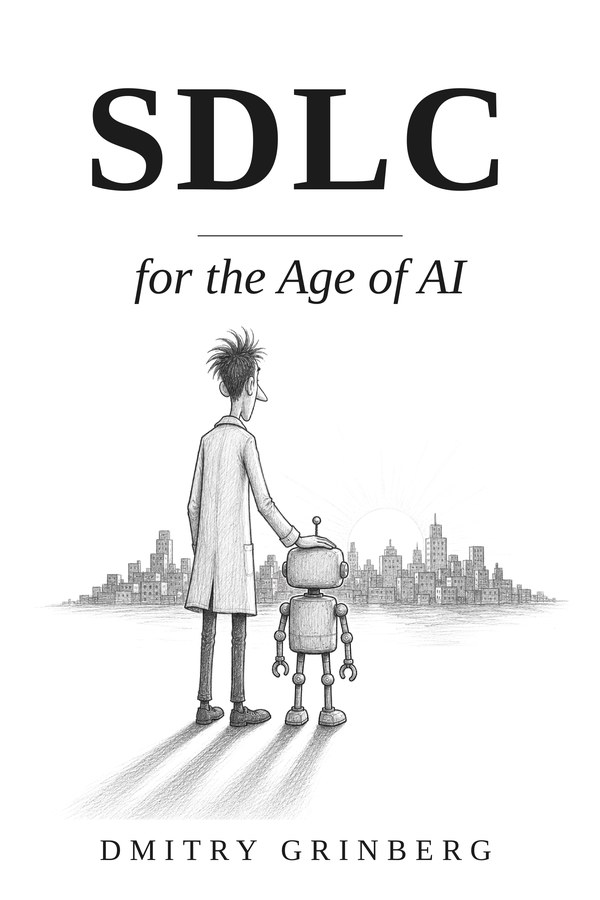

<meta charset="utf-8">
<meta name="viewport" content="width=device-width, initial-scale=1">
<title>SDLC for the Age of AI</title>
<meta name="description" content="The software lifecycle rebuilt so speed answers to evidence.">
<meta name="author" content="Dmitry Grinberg">
<style>
:root{
  --paper:#fbfaf6; --ink:#16150f; --muted:#6a665b; --rule:#d9d6cc;
  --wash:#f2f0e8; --measure:41rem;
}
@media (prefers-color-scheme: dark){
  :root{ --paper:#14140f; --ink:#ecebe3; --muted:#98948a; --rule:#33322b; --wash:#1d1c16; }
}
*{box-sizing:border-box}
html{-webkit-text-size-adjust:100%}
body{
  margin:0; background:var(--paper); color:var(--ink);
  font-family:Georgia,"Iowan Old Style","Palatino Linotype",Palatino,"Times New Roman",serif;
  font-size:17px; line-height:1.62; text-rendering:optimizeLegibility;
}
.sans{font-family:system-ui,-apple-system,"Segoe UI",Roboto,Helvetica,Arial,sans-serif}
/* Two frame widths, one per page type. A document page is 56rem because it
   carries a contents rail beside the prose (40 + 4 gap + 12); every other page
   is exactly the measure plus its gutters, so its single column fills the frame
   and sits centred instead of hugging the left edge of a wider one. */
.wrap{max-width:57rem;margin:0 auto;padding:0 1.5rem}
.wrap.narrow{max-width:44rem}

/* masthead */
.masthead{border-bottom:1px solid var(--rule);margin-bottom:3.5rem}
.masthead .wrap{display:flex;flex-wrap:wrap;align-items:baseline;gap:.5rem 2rem;padding-top:1.4rem;padding-bottom:1.4rem}
.wordmark{font-size:1.15rem;letter-spacing:.02em;font-weight:600;text-decoration:none;color:inherit}
.masthead nav{font-family:system-ui,-apple-system,"Segoe UI",Roboto,Helvetica,Arial,sans-serif;
  font-size:.8rem;letter-spacing:.07em;text-transform:uppercase;margin-left:auto;
  display:flex;flex-wrap:wrap;gap:1.4rem}
.masthead nav a{color:var(--muted);text-decoration:none;border-bottom:1px solid transparent;padding-bottom:2px}
.masthead nav a:hover{color:var(--ink);border-bottom-color:var(--ink)}
.masthead nav a[aria-current="page"]{color:var(--ink);border-bottom-color:var(--ink)}

/* prose */
main{padding-bottom:5rem}
article,.column{max-width:var(--measure)}
h1{font-size:2.35rem;line-height:1.14;font-weight:600;letter-spacing:-.012em;margin:0 0 .6rem}
h2{font-size:1.4rem;line-height:1.25;font-weight:600;margin:3.2rem 0 .9rem;letter-spacing:-.005em}
h3{font-size:1.08rem;line-height:1.3;font-weight:600;margin:2.2rem 0 .7rem}
h4{font-size:1rem;font-weight:600;margin:1.7rem 0 .5rem}
h2+h3,h3+h4{margin-top:1.2rem}
p{margin:0 0 1.15rem}
a{color:inherit;text-decoration:underline;text-decoration-thickness:1px;text-underline-offset:.16em}
a:hover{text-decoration-thickness:2px}
.anchor{float:right;margin-left:1rem;color:var(--rule);text-decoration:none;font-weight:400;opacity:0}
h2:hover .anchor,h3:hover .anchor{opacity:1}
strong{font-weight:600}
ul,ol{margin:0 0 1.15rem;padding-left:1.4rem}
li{margin:.28rem 0}
li>ul,li>ol{margin:.3rem 0}
hr{border:0;border-top:1px solid var(--rule);margin:2.5rem 0}
blockquote{
  margin:1.6rem 0;padding:.1rem 0 .1rem 1.4rem;border-left:2px solid var(--ink);
  font-size:1.14rem;line-height:1.5;font-style:italic;color:var(--ink);
}
blockquote p:last-child{margin-bottom:0}
code{
  font-family:ui-monospace,SFMono-Regular,Menlo,Consolas,"Liberation Mono",monospace;
  font-size:.855em;background:var(--wash);padding:.08em .2em;border-radius:2px;
  font-style:normal;
}
pre{
  background:var(--wash);border:1px solid var(--rule);border-radius:2px;
  padding:.95rem 1.1rem;overflow-x:auto;margin:0 0 1.35rem;line-height:1.5;
}
/* Sized so the loop diagram, the longest line the front page has to show
   without scrolling, fits the measure. */
pre code{background:none;padding:0;font-size:.78rem}
.unlinked{border-bottom:1px dotted var(--rule)}
.scroll{overflow-x:auto;margin:0 0 1.4rem}
table{border-collapse:collapse;width:100%;font-size:.92rem;line-height:1.45}
th,td{border-bottom:1px solid var(--rule);padding:.5rem .8rem .5rem 0;text-align:left;vertical-align:top}
th{font-family:system-ui,-apple-system,"Segoe UI",Roboto,Helvetica,Arial,sans-serif;
  font-size:.72rem;letter-spacing:.07em;text-transform:uppercase;color:var(--muted);
  border-bottom:1px solid var(--ink);font-weight:600;white-space:nowrap}

/* eyebrow labels */
.eyebrow{font-family:system-ui,-apple-system,"Segoe UI",Roboto,Helvetica,Arial,sans-serif;
  font-size:.7rem;letter-spacing:.13em;text-transform:uppercase;color:var(--muted);
  margin:0 0 .55rem;display:block}

/* landing */
.hero{max-width:var(--measure);margin:0 0 3rem}
.hero h1{font-size:3.6rem;letter-spacing:-.02em;margin-bottom:.9rem}
.hero .tagline{font-size:1.3rem;line-height:1.42;font-style:italic;color:var(--muted);margin:0}
.band{max-width:var(--measure);padding-top:2.6rem;margin-top:2.6rem;border-top:1px solid var(--rule)}
.band>h2:first-child{margin-top:0}
.band.first{padding-top:0;margin-top:0;border-top:0}
.band>ol>li{margin:.75rem 0}
.source{font-family:system-ui,-apple-system,"Segoe UI",Roboto,Helvetica,Arial,sans-serif;
  font-size:.75rem;color:var(--muted);margin:1.5rem 0 0}
.source a{color:var(--muted)}

/* document index */
.docrow{padding:1.5rem 0;border-top:1px solid var(--rule)}
.docrow:first-of-type{border-top:0;padding-top:.5rem}
.docrow h3{margin:0 0 .4rem;font-size:1.15rem}
.docrow h3 a{text-decoration:none;border-bottom:1px solid var(--rule)}
.docrow h3 a:hover{border-bottom-color:var(--ink)}
.docrow p{margin:0 0 .5rem}
.docrow dl{margin:.55rem 0 0;font-size:.87rem;color:var(--muted)}
.docrow dt{font-family:system-ui,-apple-system,"Segoe UI",Roboto,Helvetica,Arial,sans-serif;
  font-size:.68rem;letter-spacing:.11em;text-transform:uppercase;margin:.6rem 0 .1rem}
.docrow dd{margin:0}
.ordinal{font-size:.8rem;color:var(--muted);font-variant-numeric:tabular-nums}

/* document page */
.dochead{max-width:var(--measure);margin-bottom:0}
.dochead .tagline{font-size:1.14rem;line-height:1.45;font-style:italic;color:var(--muted);margin:0 0 .8rem}
.meta{font-family:system-ui,-apple-system,"Segoe UI",Roboto,Helvetica,Arial,sans-serif;
  font-size:.75rem;letter-spacing:.05em;color:var(--muted)}
.doc{display:grid;grid-template-columns:minmax(0,1fr);gap:2.5rem}
.toc{font-family:system-ui,-apple-system,"Segoe UI",Roboto,Helvetica,Arial,sans-serif;font-size:.8rem;line-height:1.45}
.toc ol{list-style:none;margin:0;padding:0}
.toc li{margin:.42rem 0}
.toc a{color:var(--muted);text-decoration:none}
.toc a:hover{color:var(--ink);text-decoration:underline}
/* Below the two-column breakpoint the contents sit above the prose, where a
   long stacked list would push the document itself off the first screen. They
   run in as one flowing line instead, the way a book's contents note does. */
@media (max-width:62rem){
  .toc ol{line-height:1.95}
  .toc li{display:inline;margin:0}
  .toc li:not(:last-child)::after{content:" / ";color:var(--rule)}
}
@media (min-width:62rem){
  .doc{grid-template-columns:minmax(0,var(--measure)) 12rem;gap:2.5rem 4rem}
  .doc>.dochead{grid-column:1 / -1}
  .doc>article{grid-column:1;grid-row:2}
  .doc>.toc{grid-column:2;grid-row:2;position:sticky;top:2rem;align-self:start;
    max-height:calc(100vh - 4rem);overflow-y:auto}
}

/* footer */
footer{border-top:1px solid var(--rule);padding:2rem 0 3.5rem;
  font-family:system-ui,-apple-system,"Segoe UI",Roboto,Helvetica,Arial,sans-serif;
  font-size:.78rem;color:var(--muted)}
footer p{margin:0 0 .4rem;max-width:var(--measure)}

.bookrow{display:flex;gap:2rem;align-items:flex-start;flex-wrap:wrap}
.bookrow .cover{width:150px;height:auto;box-shadow:0 2px 14px rgba(0,0,0,.18);border-radius:2px}
.bookrow .cover.big{width:230px}
.bookcopy{flex:1 1 18rem;min-width:16rem}
.bookcopy h3{font-size:1.35rem;margin:0 0 .5rem}
.bookcopy .hook{font-weight:600;margin:0 0 .7rem}
.buys{margin:1rem 0 0;display:flex;gap:.6rem;flex-wrap:wrap}
a.buy{display:inline-block;padding:.5rem .95rem;border:1px solid currentColor;border-radius:3px;
      text-decoration:none;font-size:.95rem}
a.buy .bd{opacity:.65;font-size:.85em}
ol.chapters{columns:2;column-gap:2.5rem;max-width:var(--measure)}
@media (max-width:640px){ol.chapters{columns:1}.bookrow .cover.big{width:170px}}
</style>
<header class="masthead"><div class="wrap narrow"><a class="wordmark" href="index.html">Veldo</a><nav><a href="index.html">Overview</a><a href="docs/method.html">Method</a><a href="docs/index.html">Documents</a></nav></div></header>
<main class="wrap narrow">
<section class="hero"><h1>SDLC for the Age of AI</h1><p class="tagline">The software lifecycle rebuilt so speed answers to evidence.</p></section><section class="band first"><div class="bookrow"><div class="bookcopy"><p class="hook">Code got cheap. Certainty didn&#x27;t.</p><p>AI writes plausible code faster than any review can keep honest. You never took a developer&#x27;s word for it either, and &quot;works on my machine&quot; was never proof. Tests, reviews and pipelines exist because trust in software was always supposed to be earned with evidence.</p><p>This book takes that instinct to its conclusion and rebuilds the development lifecycle around it: people define what must be true and judge what ships, machines build the change and prove it against those criteria, and anything unproven does not get in.</p><p class="buys"><a class="buy" href="https://www.amazon.com/dp/B0HFH744JL">Paperback <span class="bd">122 pages</span></a><a class="buy" href="https://www.amazon.com/dp/B0HFH12DYB">Kindle</a></p></div></div></section><section class="band"><h2>What is in it</h2><ol class="chapters"><li>The Inversion</li><li>The Specification</li><li>The Proof</li><li>The Independent Review</li><li>The Green Gate</li><li>The Plan</li><li>Small and Reversible</li><li>The Fleet</li><li>The Release</li><li>The Shape of the System</li><li>The Incident</li><li>The Attack Surface</li><li>Tokens of Effort</li><li>Adoption</li><li>What Done Means Now</li></ol></section><section class="band"><h2>The method is free</h2><p>The method is on this site in full, and the reference implementation is open source. Nothing here is a teaser for the book. What the book adds is the argument, the reasoning behind each rule, and the account of building the thing these documents describe.</p></section>
</main>
<footer class="wrap narrow"><p><a href="https://github.com/Bcengi/veldo" rel="noreferrer">Bcengi/veldo</a></p><p>Veldo. Written by Dmitry Grinberg. Every page on this site is rendered from the documents in the repository.</p></footer>
